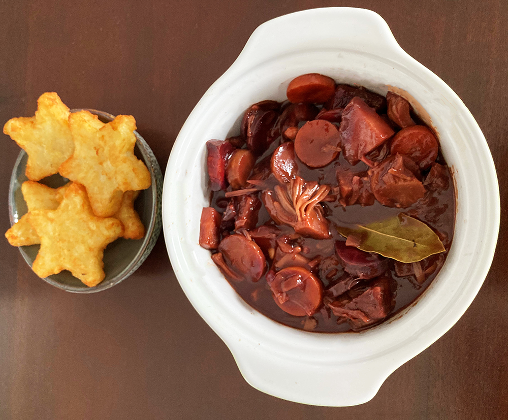

zuurvlega
De veganistische variant op Limburgs zuurvlees!

Bereidingsduur: 160 minuten
Aantal personen: 5
Ingrediënten:
600 gram jackfruit
2 uien
200 gram pastinaak
200 gram wortel
200 gram paarse wortel
150 ml azijn
3 kruidnagels
3 plakken ontbijtkoek
3 laurierblaadjes
3 eetlepels appelstroop
2 eetlepels basterdsuiker
1 fles bruin bier
1 blokje groentebouillon
600 gram jackfruit
2 uien
200 gram pastinaak
200 gram wortel
200 gram paarse wortel
150 ml azijn
3 kruidnagels
3 plakken ontbijtkoek
3 laurierblaadjes
3 eetlepels appelstroop
2 eetlepels basterdsuiker
1 fles bruin bier
1 blokje groentebouillon
Instructies:
1. Laat het jackfruit uitlekken en snijd in grote stukken. Bestrooi met peper en zout. Snipper de uien en bak deze kort glazig.
2. Voeg de jackfruit toe en roerbak een paar minuten en voeg dan de azijn, kruidnagels, laurierbladeren, het bier, bouillonblokje en 100 ml water toe. Breng dit aan de kook.
3. Snijd de ontbijtkoekplakken in kleine blokjes.
4. Wanneer het kookt voeg je de stroop, suiker en 2/3 van de ontbijtkoekstukjes toe. Roer goed en laat met de deksel op de pan 2 uur stoven. Voeg eventueel nog wat bouillon en bier toe zodat het jackfruit onder water staat.
5. Snijd ondertussen de wortels en pastinaak in schijfjes.
6. Voeg na 45 minuten stoven de stukjes wortel en pastinaak toe. Voeg de laatste 20 minuten de laatste ontbijtkoekplak toe. Roer regelmatig en laat nu zonder deksel stoven zodat de saus wat meer indikt.
7. Haal de laurierblaadjes en kruidnagels eruit. Serveer het gerecht met aardappels of frietjes.
1. Laat het jackfruit uitlekken en snijd in grote stukken. Bestrooi met peper en zout. Snipper de uien en bak deze kort glazig.
2. Voeg de jackfruit toe en roerbak een paar minuten en voeg dan de azijn, kruidnagels, laurierbladeren, het bier, bouillonblokje en 100 ml water toe. Breng dit aan de kook.
3. Snijd de ontbijtkoekplakken in kleine blokjes.
4. Wanneer het kookt voeg je de stroop, suiker en 2/3 van de ontbijtkoekstukjes toe. Roer goed en laat met de deksel op de pan 2 uur stoven. Voeg eventueel nog wat bouillon en bier toe zodat het jackfruit onder water staat.
5. Snijd ondertussen de wortels en pastinaak in schijfjes.
6. Voeg na 45 minuten stoven de stukjes wortel en pastinaak toe. Voeg de laatste 20 minuten de laatste ontbijtkoekplak toe. Roer regelmatig en laat nu zonder deksel stoven zodat de saus wat meer indikt.
7. Haal de laurierblaadjes en kruidnagels eruit. Serveer het gerecht met aardappels of frietjes.